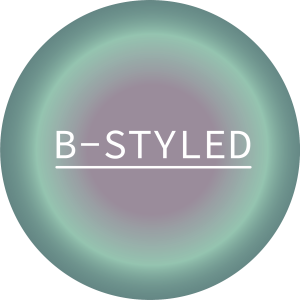
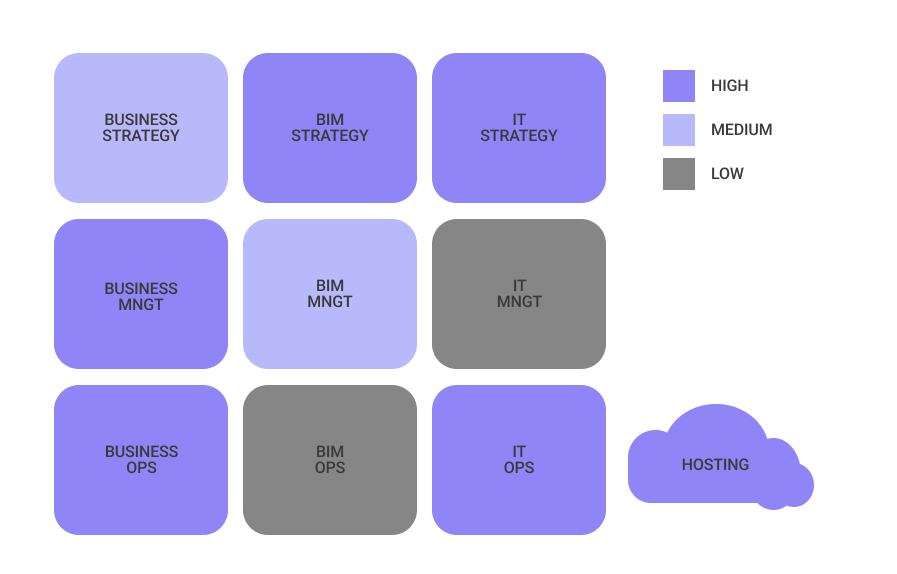
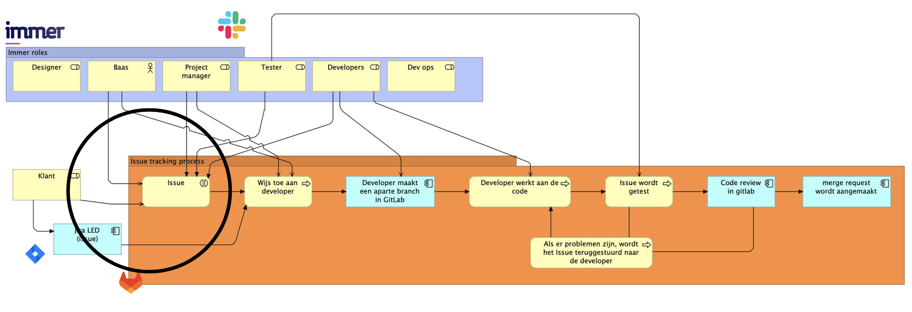

Over mij
Ik ben Sten Bisschop, en op dit moment volg ik de minor ICT voor niet-ICT'ers in Utrecht. Ik studeer aan de Hogeschool van Avans in Den Bosch, maar ik woon in Woerden. Uit de Belbin test blijkt dat ik zowel de rol van plant als die van business man vertegenwoordig.
Inleiding
In mijn vakgebied, Communication Multimedia Design (CMD), is informatietechnologie (ICT) erg belangrijk. Dit onderzoek heeft als doel om de huidige toepassing van ICT in CMD te onderzoeken en mogelijke kansen voor verbetering te identificeren. Hierdoor kan ik begrijpen hoe ICT mijn werk beïnvloedt en hoe ik het effectiever kan inzetten om innovaties te stimuleren. Zo biedt dit onderzoek mij waardevolle inzichten om nieuwe ICT oplossingen in CMD te verkennen.
Doelstellingen en scope
Doelstellingen:
- Diepgaand begrijpen hoe ICT wordt ingezet in het beroepenveld van CMD
- Identificeren van specifieke kansen voor het gebruik van ICT om de efficiëntie en effectiviteit van kleinere bedrijven in CMD te verbeteren.
Scope:
- Dit onderzoek kijkt naar hoe ICT wordt gebruikt in CMD, vooral door kleine bedrijven. Ik wil begrijpen hoe deze kleine bedrijven met behulp van ICT vernieuwingen kunnen realiseren.
- Een klein bedrijf is minder dan of gelijk aan 30 werknemers.
Verkennen van het beroepenveld
CMD staat voor Communication Multimedia Design, een dynamisch vakgebied dat zich richt op het creëren, beheren en optimaliseren van visuele en interactieve content voor verschillende media en platforms.
Rollen en verantwoordelijkheden
CMD'ers nemen diverse rollen aan in specialisaties zoals grafisch ontwerp, webontwikkeling, UX/UI-ontwerp en contentmanagement. Dit vakgebied strekt zich uit over verschillende sectoren, waaronder media, ICT, retail en meer.
Dynamisch
CMD past zich constant aan op basis van opkomende technologieën, zoals sociale media, AI, VR en andere trends om relevante content te creëren.
Specialisaties
CMD biedt specialisaties zoals UX/UI-design, motion design en content marketing, waardoor professionals zich kunnen concentreren op specifieke expertisegebieden.
ICT in CMD
laten we eens kijken naar de huidige rol van ICT in CMD. Deze technologieën en tools vormen de ruggengraat van het beroepenveld en omvatten onder andere Content Management Systemen (CMS), kunstmatige intelligentie (AI), webontwikkeling frameworks en diverse softwaretoepassingen.
reflectie
Het CMD veld is sterk afhankelijk van gespecialiseerde softwaretoepassingen. Dit omvat grafische ontwerpsoftware, code editors, videobewerkingsprogramma's CMS platforms. Deze tools stellen CMD'ers in staat om creatieve en functionele multimedia inhoud te creëren.
Webtechnologieën
Web3 streeft naar decentralisatie en meer controle over persoonlijke data. Dit opent nieuwe mogelijkheden voor CMD'ers, maar brengt ook ethische vraagstukken met zich mee.
Webflow wint ten opzichte van WordPress vanwege zijn gebruiksvriendelijkheid en flexibiliteit voor CMD'ers, wat laat zien hoe snel technologische trends kunnen veranderen.
Artificial Intelligence (AI)
AI wordt een cruciale partner in creatieve processen, maar brengt ethische vraagstukken met zich mee, zoals auteurschap en bias in AI systemen.
Virtual Reality (VR) en Augmented Reality (AR)
VR en AR bieden nieuwe kansen voor creativiteit en betrokkenheid, en zijn van toepassing in sectoren zoals onderwijs en retail.
Software
CMD'ers maken gebruik van diverse software, zoals grafisch ontwerpsoftware, webontwikkelingstools, UI/UX ontwerpsoftware en videobewerkingssoftware. Het benadrukt het belang van voortdurende bijscholing en het omarmen van nieuwe tools om concurrerend te blijven in het veld.
Interviews
Reflectie
Tijdens deze interviews leerde ik dat bedrijven in CMD sterk afhankelijk zijn van ICT om hun dagelijkse activiteiten te beheren en te innoveren. ICT systemen ondersteunen hen bij het ontwerpen, ontwikkelen en leveren van creatieve multimediaoplossingen.

B-styleds huidige workflow heeft behoefte aan efficiëntieverbeteringen.
ICT toepassingen zoals geautomatiseerde facturatie kunnen haar bedrijfsprocessen verbeteren.
Het gebruik van visuele elementen in haar werk sluit aan bij CMD's focus op effectieve communicatie en visuele storytelling.
Reflectie:
De inzichten van B-styled benadrukken het potentieel van ICT in het optimaliseren van zakelijke processen, wat een belangrijk aspect is van het CMD vakgebied. Haar nadruk op visuele elementen weerspiegelt het belang van effectieve communicatie, een kernprincipe van CMD.
Immer maakt al gebruik van verschillende ICT tools.
Er zijn uitdagingen op het gebied van optimalisatie van codebeheer en efficiëntie.
ICT toepassingen, zoals versnelling van GitLab pipelines en geautomatiseerde tests, kunnen bijdragen aan verbeterde efficiëntie.
Reflectie:
Het interview met Immer benadrukt de voortdurende evolutie van ICT tools en de behoefte aan voortdurende optimalisatie. De toepassing van ICT binnen zijn bedrijf weerspiegelt de technologische diversiteit in het CMD vakgebied en is in het belang van efficiëntie en kwaliteit.
Imagea gebruikt AI als een krachtige tool in haar werkproces.
Ze benadrukt het belang van ICT en AI in het vakgebied.
ICT en AI helpen haar om authentiek en hoogwaardig werk te leveren aan haar klanten.
Reflectie:
Het interview met Imagea geeft de centrale rol van ICT weer, met name AI, in haar creatieve proces. Haar reflectie benadrukt de noodzaak van technologische ondersteuning om kwalitatief hoogstaand werk te leveren, en dit benadrukt dat CMD'ers afhankelijk zijn van geavanceerde technologieën. Het benadrukt ook de ethische overwegingen rond het gebruik van AI in creatieve beroepen.
Design thinking
Design Thinking, een gestructureerde methode voor probleemoplossing, speelde een centrale rol in mijn onderzoek. Het gebruik van Design Thinking stelde me in staat om diepgaand inzicht te krijgen in de behoeften van CMD'ers en vergelijkbare bedrijven hun klanten. Dit proces omvatte het analyseren van bestaande workflows en deels al een beetje informatie van klant feedback.
Define
Uitdagingen
Eerst leek het moeilijk om een probleem bij Immer te identificeren, omdat hun processen goed leken te werken. Echter, na grondige analyse en gesprekken met medewerkers kwam naar voren dat er wel degelijk mogelijkheden waren voor verbetering.
Inzicht bedrijfsstructuur
Een belangrijke eerste stap was het in kaart brengen van het business model van Immer. Dit gaf een diepgaand inzicht in de structuur en werking van het bedrijf.
Gesprekken met Monique, die verantwoordelijk is voor het testen van nieuwe verbeteringen, onthulden de projectmanagementstructuur en hiërarchie binnen het bedrijf.
Het invullen van het 9 vlaksmodel onthulde vooral uitdagingen op het gebied van IT management. De beperkte verantwoordelijkheid voor het beheer van issues leidde tot inefficiënties en frustraties. Ontwikkelaars hadden onvoldoende zicht op de voortgang van projecten, wat hun flexibiliteit beperkte.
9 vlaksmodel

De dagelijkse workflow en rollen binnen Immer heb ik voor mezelf meer in kaart gebracht. Ik zag hier een mogelijkheid door.
workflow en rollen

Het voornaamste probleem dat Immer Digital Agency leek te kwellen, was het beheer van issues van al hun projecten. Dit gebrek aan effectief issuebeheer had een aanzienlijke impact op de efficiëntie van hun werkprocessen en werd ook benadrukt in het interview met Michael, waar het 'vereenvoudigen van werkprocessen' naar voren kwam.
Het probleem bij Immer is het inefficiënte beheer van issues voor al hun projecten. Dit leidt tot een gebrek aan overzicht en vertraagde oplossingen.
Ideate
Een uitgebreider en geavanceerder issue management systeem kan een oplossing bieden voor dit specifieke probleem, wat zal bijdragen aan de verbetering van de algehele workflow en productiviteit binnen het bedrijf.